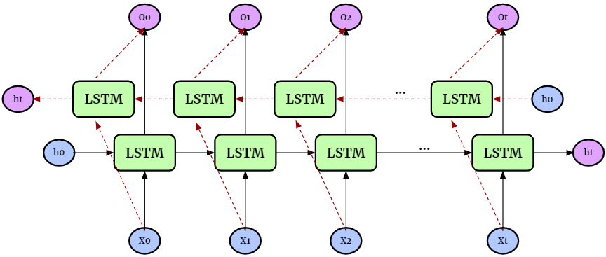
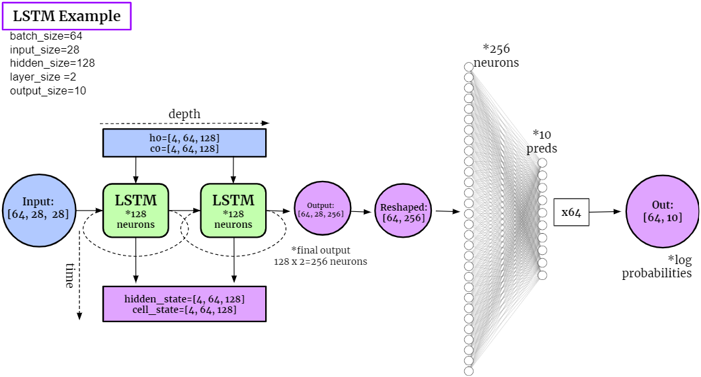

Training LSTM with Constrained Weights#
In this part, we aim to train LSTM (Long Short Term Memory RNNs) where some of its weights are constrained over certain manifolds. Generally speaking, a LSTM is more complex than an simple RNN:
it is composed by cell states and gates
it has the purpose to LEARN what to remember and forget reduntant information
it uses SIGMOID functions instead of TANH
Composition of the cell in LSTM:
the cell has 2 outputs: the cell state and the hidden state
Forget Gate (
Xt + ht-1): desides what information to FORGET; the closer to 0 is forget, the closer to 1 is remainInput Gate (
Xt + ht-1): creates a candidate with what information to remainCurrent Cell State:
ft*Ct-1 + it*CtOutput Gate (
(Xt + ht-1) * ct): desides what the next hidden state should be (which contains info about previous inputs)
Here we consider bidirectional LSTMs, which are an extension of traditional LSTMs that can improve model performance on sequence classification problems. They train the model forward and backward on the same input (so for 1 layer LSTM we get 2 hidden and cell states)

Below is a schema of how the example code works

Importing modules#
We first import all the necessary modules for training LSTM.
# Imports
import torch
import torch.nn as nn
import torch.nn.functional as F
import torch.optim as optim
import os
import numpy as np
import torchvision
import torchvision.transforms as transforms
import matplotlib.pyplot as plt
%matplotlib inline
import sklearn.metrics
import seaborn as sns
import random
from torch.nn.parameter import Parameter
# To display youtube videos
from IPython.display import YouTubeVideo
from cdopt.manifold_torch import euclidean_torch, stiefel_torch
from cdopt.nn import RNN_cdopt, LSTM_cdopt, get_quad_penalty
def set_seed(seed = 1234):
'''Sets the seed of the entire notebook so results are the same every time we run.
This is for REPRODUCIBILITY.'''
np.random.seed(seed)
random.seed(seed)
torch.manual_seed(seed)
torch.cuda.manual_seed(seed)
# When running on the CuDNN backend, two further options must be set
torch.backends.cudnn.deterministic = True
# Set a fixed value for the hash seed
os.environ['PYTHONHASHSEED'] = str(seed)
set_seed()
device = torch.device('cuda' if torch.cuda.is_available() else 'cpu')
print('Device available now:', device)
Device available now: cuda
Define the network#
Define a neurnal with constrained weights are quite simple via CDOpt, we only need the following two procedures:
Replace the layers in
torch.nnby the layers fromcdopt.utils_torch.nnand specify themanifold_classoptions.Add the
layer.quad_penalty()to the loss function.
# Customized transform (transforms to tensor, here you can normalize, perform Data Augmentation etc.)
my_transform = transforms.Compose([transforms.ToTensor()])
# Download data
mnist_train = torchvision.datasets.MNIST('data', train = True, download=True, transform=my_transform)
mnist_test = torchvision.datasets.MNIST('data', train = False, download=True, transform=my_transform)
class LSTM_MNIST(nn.Module):
def __init__(self, input_size, hidden_size, layer_size, output_size, bidirectional=True):
super(LSTM_MNIST, self).__init__()
self.input_size, self.hidden_size, self.layer_size, self.output_size = input_size, hidden_size, layer_size, output_size
self.bidirectional = bidirectional
# Step1: the LSTM model
self.lstm = LSTM_cdopt(input_size, hidden_size, layer_size, batch_first=True, bidirectional=bidirectional, manifold_class = stiefel_torch, penalty_param = 0.5)
# Step2: the FNN
if bidirectional: # we'll have 2 more layers
self.layer = nn.Linear(hidden_size*2, output_size)
else:
self.layer = nn.Linear(hidden_size, output_size)
def forward(self, images, prints=False):
if prints: print('images shape:', images.shape)
# Set initial states
if self.bidirectional:
# Hidden state:
hidden_state = torch.zeros(self.layer_size*2, images.size(0), self.hidden_size)
# Cell state:
cell_state = torch.zeros(self.layer_size*2, images.size(0), self.hidden_size)
else:
# Hidden state:
hidden_state = torch.zeros(self.layer_size, images.size(0), self.hidden_size)
# Cell state:
cell_state = torch.zeros(self.layer_size, images.size(0), self.hidden_size)
hidden_state = hidden_state.to(device)
cell_state = cell_state.to(device)
if prints: print('hidden_state t0 shape:', hidden_state.shape, '\n' +
'cell_state t0 shape:', cell_state.shape)
# LSTM:
output, (last_hidden_state, last_cell_state) = self.lstm(images, (hidden_state, cell_state))
if prints: print('LSTM: output shape:', output.shape, '\n' +
'LSTM: last_hidden_state shape:', last_hidden_state.shape, '\n' +
'LSTM: last_cell_state shape:', last_cell_state.shape)
# Reshape
output = output[:, -1, :]
if prints: print('output reshape:', output.shape)
# FNN:
output = self.layer(output)
if prints: print('FNN: Final output shape:', output.shape)
return output
One-pass test#
We then test how our LSTM works with given samples. We take a single batch of the images from the MINST dataset and observe the outputs of the LSTM network.
# ====== STATICS ======
batch_size = 64
input_size = 28 # width of image
hidden_size = 128 # number of hidden neurons
layer_size = 4 # number of layers
output_size = 10 # possible choices
# =====================
# Taking a single batch of the images
train_loader_example = torch.utils.data.DataLoader(mnist_train, batch_size=64)
images, labels = next(iter(train_loader_example))
print('original images shape:', images.shape)
# Remove channel from shape
images = images.reshape(-1, 28, 28).to(device)
print('reshaped images shape:', images.shape, '\n')
# Creating the Model
lstm_example = LSTM_MNIST(input_size, hidden_size, layer_size, output_size)
lstm_example.to(device)
print('lstm_example:', lstm_example, '\n')
# Making log predictions:
out = lstm_example(images, prints=True)
original images shape: torch.Size([64, 1, 28, 28])
reshaped images shape: torch.Size([64, 28, 28])
lstm_example: LSTM_MNIST(
(lstm): LSTM_cdopt(28, 128, num_layers=4, batch_first=True, bidirectional=True)
(layer): Linear(in_features=256, out_features=10, bias=True)
)
images shape: torch.Size([64, 28, 28])
hidden_state t0 shape: torch.Size([8, 64, 128])
cell_state t0 shape: torch.Size([8, 64, 128])
LSTM: output shape: torch.Size([64, 28, 256])
LSTM: last_hidden_state shape: torch.Size([8, 64, 128])
LSTM: last_cell_state shape: torch.Size([8, 64, 128])
output reshape: torch.Size([64, 256])
FNN: Final output shape: torch.Size([64, 10])
Training on ALL IMAGES#
def get_accuracy(out, actual_labels, batchSize):
'''Saves the Accuracy of the batch.
Takes in the log probabilities, actual label and the batchSize (to average the score).'''
predictions = out.max(dim=1)[1]
correct = (predictions == actual_labels).sum().item()
accuracy = correct/batch_size
return accuracy
def train_network(model, train_data, test_data, batchSize=64, num_epochs=1, learning_rate=0.0005):
'''Trains the model and computes the average accuracy for train and test data.'''
print('Get data ready...')
# Create dataloader for training dataset - so we can train on multiple batches
# Shuffle after every epoch
train_loader = torch.utils.data.DataLoader(dataset=train_data, batch_size=batchSize, shuffle=True, drop_last=True)
test_loader = torch.utils.data.DataLoader(dataset=test_data, batch_size=batchSize, shuffle=True, drop_last=True)
# Create criterion and optimizer
criterion = nn.CrossEntropyLoss()
optimizer = optim.Adam(model.parameters(), lr=learning_rate)
print('Training started...')
# Train the data multiple times
for epoch in range(num_epochs):
# Save Train and Test Loss
train_loss = 0
train_acc = 0
# Set model in training mode:
model.train()
for k, (images, labels) in enumerate(train_loader):
# Get rid of the channel
images = images.view(-1, 28, 28)
images = images.to(device)
labels = labels.to(device)
# print(labels.device)
# Create log probabilities
out = model(images)
# Clears the gradients from previous iteration
optimizer.zero_grad()
# Computes loss: how far is the prediction from the actual?
loss = criterion(out, labels) + get_quad_penalty(model)
# Computes gradients for neurons
loss.backward()
# Updates the weights
optimizer.step()
# Save Loss & Accuracy after each iteration
train_loss += loss.item()
train_acc += get_accuracy(out, labels, batchSize)
# Print Average Train Loss & Accuracy after each epoch
print('TRAIN | Epoch: {}/{} | Loss: {:.2f} | Accuracy: {:.2f}'.format(epoch+1, num_epochs, train_loss/k, train_acc/k))
print('Testing Started...')
# Save Test Accuracy
test_acc = 0
# Evaluation mode
model.eval()
for k, (images, labels) in enumerate(test_loader):
# Get rid of the channel
images = images.view(-1, 28, 28)
images = images.to(device)
labels = labels.to(device)
# Create logit predictions
out = model(images)
# Add Accuracy of this batch
test_acc += get_accuracy(out, labels, batchSize)
# Print Final Test Accuracy
print('TEST | Average Accuracy per {} Loaders: {:.5f}'.format(k, test_acc/k) )
# ==== STATICS ====
batch_size = 64
input_size = 28
hidden_size = 100
layer_size = 2
output_size = 10
# Instantiate the model
# We'll use TANH as our activation function
lstm_rnn = LSTM_MNIST(input_size, hidden_size, layer_size, output_size)
lstm_rnn.to(device)
# ==== TRAIN ====
train_network(lstm_rnn, mnist_train, mnist_test, num_epochs=10)
Get data ready...
Training started...
TRAIN | Epoch: 1/10 | Loss: 0.63 | Accuracy: 0.80
TRAIN | Epoch: 2/10 | Loss: 0.16 | Accuracy: 0.96
TRAIN | Epoch: 3/10 | Loss: 0.11 | Accuracy: 0.97
TRAIN | Epoch: 4/10 | Loss: 0.09 | Accuracy: 0.98
TRAIN | Epoch: 5/10 | Loss: 0.07 | Accuracy: 0.98
TRAIN | Epoch: 6/10 | Loss: 0.06 | Accuracy: 0.98
TRAIN | Epoch: 7/10 | Loss: 0.06 | Accuracy: 0.99
TRAIN | Epoch: 8/10 | Loss: 0.05 | Accuracy: 0.99
TRAIN | Epoch: 9/10 | Loss: 0.05 | Accuracy: 0.99
TRAIN | Epoch: 10/10 | Loss: 0.04 | Accuracy: 0.99
Testing Started...
TEST | Average Accuracy per 155 Loaders: 0.98982
lstm_rnn.lstm.quad_penalty()
tensor(0.0052, device='cuda:0', grad_fn=<AddBackward0>)
Confusion Matrix#
A good way to visualize better how the model is performing is through a confusion matrix. So, you can see how well each label is predicted and what labels the model confuses with other labels.
def get_confusion_matrix(model, test_data):
# First we make sure we disable Gradient Computing
torch.no_grad()
# Model in Evaluation Mode
model.eval()
preds, actuals = [], []
for image, label in mnist_test:
image = image.to(device)
# label = label.to(device)
image = image.view(-1, 28, 28)
out = model(image)
prediction = torch.max(out, dim=1)[1].item()
preds.append(prediction)
actuals.append(label)
return sklearn.metrics.confusion_matrix(preds, actuals)
plt.figure(figsize=(16, 5))
sns.heatmap(get_confusion_matrix(lstm_rnn, mnist_test), cmap='icefire', annot=True, linewidths=0.1,
fmt = ',')
plt.title('Confusion Matrix: LSTM', fontsize=15)
Text(0.5, 1.0, 'Confusion Matrix: LSTM')
Reference#
https://www.kaggle.com/code/andradaolteanu/pytorch-rnns-and-lstms-explained-acc-0-99
Jing L, Gulcehre C, Peurifoy J, et al. Gated orthogonal recurrent units: On learning to forget[J]. Neural computation, 2019, 31(4): 765-783.
Hu X, Xiao N, Liu X, Toh KC. A Constraint Dissolving Approach for Nonsmooth Optimization over the Stiefel Manifold[J]. arXiv preprint arXiv:2205.10500, 2022.